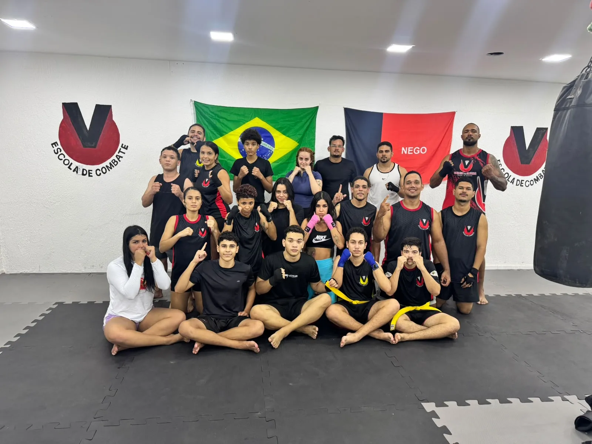
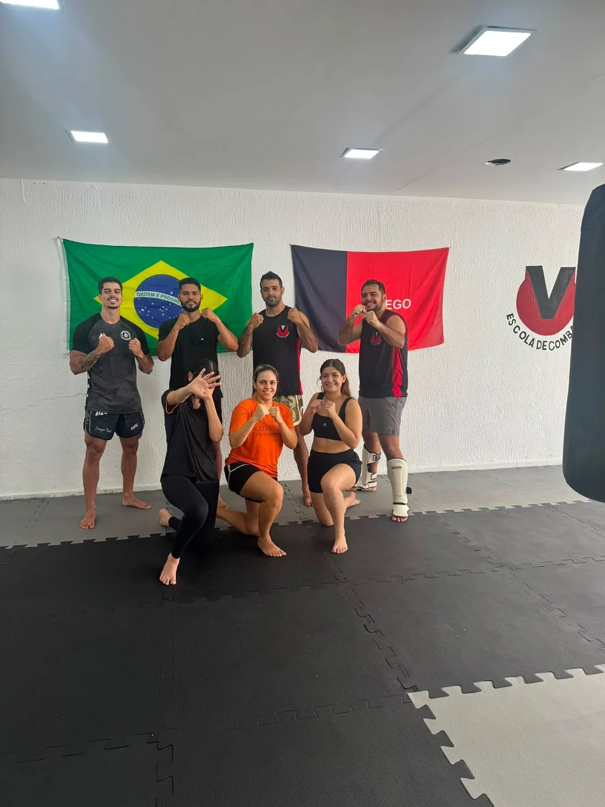

Artes marciais no Valentina, João Pessoa
Modalidades na ECVO
Conheça as práticas oferecidas pela ECVO e encontre uma forma de começar com orientação.
Escolha sua modalidade
Cada treino tem seu caminho.
Jiu-Jitsu
Treine Jiu-Jitsu no Valentina, em João Pessoa, com acompanhamento técnico para desenvolver posições, controle, raspagens e finalizações no tatame.
Conhecer Jiu-Jitsu ModalidadeNoGi
Treine NoGi no Valentina, em João Pessoa, e desenvolva controle, movimentação, transições e finalizações na luta agarrada sem kimono.
Conhecer NoGi
ModalidadeKickboxing
Treine Kickboxing no Valentina, em João Pessoa, com técnica de socos e chutes, coordenação, condicionamento e uma progressão adequada para diferentes níveis.
Conhecer Kickboxing ModalidadeKickboxing Funcional e AeroBoxe
Movimento, ritmo e energia em uma aula que combina exercícios funcionais, Kickboxing e AeroBoxe — sem combate ou troca de golpes.
Conhecer Kickboxing Funcional e AeroBoxe
ModalidadeMuay Thai
Treine Muay Thai no Valentina, em João Pessoa, com orientação técnica para desenvolver golpes com mãos, pernas, joelhos e cotovelos dentro da metodologia da turma.
Conhecer Muay Thai ModalidadeBoxe
Treine Boxe no Valentina, em João Pessoa, com foco em guarda, golpes com as mãos, defesa, distância, coordenação e trabalho de pés.
Conhecer Boxe ModalidadeMMA
Treine MMA no Valentina, em João Pessoa, e conheça uma modalidade que integra fundamentos de luta em pé, luta agarrada e transições entre diferentes distâncias.
Conhecer MMA ModalidadeKickboxing - Turma Kids
No Valentina, em João Pessoa, a turma Kids de Kickboxing apresenta fundamentos de forma orientada, com atenção à técnica, à coordenação, à convivência e à segurança.
Conhecer Kickboxing - Turma Kids ModalidadeKaratê
Conheça o Karatê na ECVO, no Valentina, em João Pessoa, com uma prática orientada de fundamentos, técnica, coordenação, disciplina e respeito.
Conhecer Karatê ModalidadeKaratê - Turma Kids
A Turma Kids de Karatê da ECVO apresenta fundamentos da modalidade com atenção ao movimento, à coordenação, à disciplina, ao respeito e à convivência.
Conhecer Karatê - Turma Kids ModalidadeKrav Maga
Conheça o Krav Maga na ECVO, no Valentina, em João Pessoa, com uma prática orientada para desenvolver atenção, segurança, disciplina e fundamentos de autodefesa.
Conhecer Krav Maga ModalidadeJudô - Turma Kids
A Turma Kids de Judô da ECVO apresenta fundamentos da modalidade com atenção ao movimento, ao equilíbrio, à disciplina, ao respeito e à convivência.
Conhecer Judô - Turma Kids